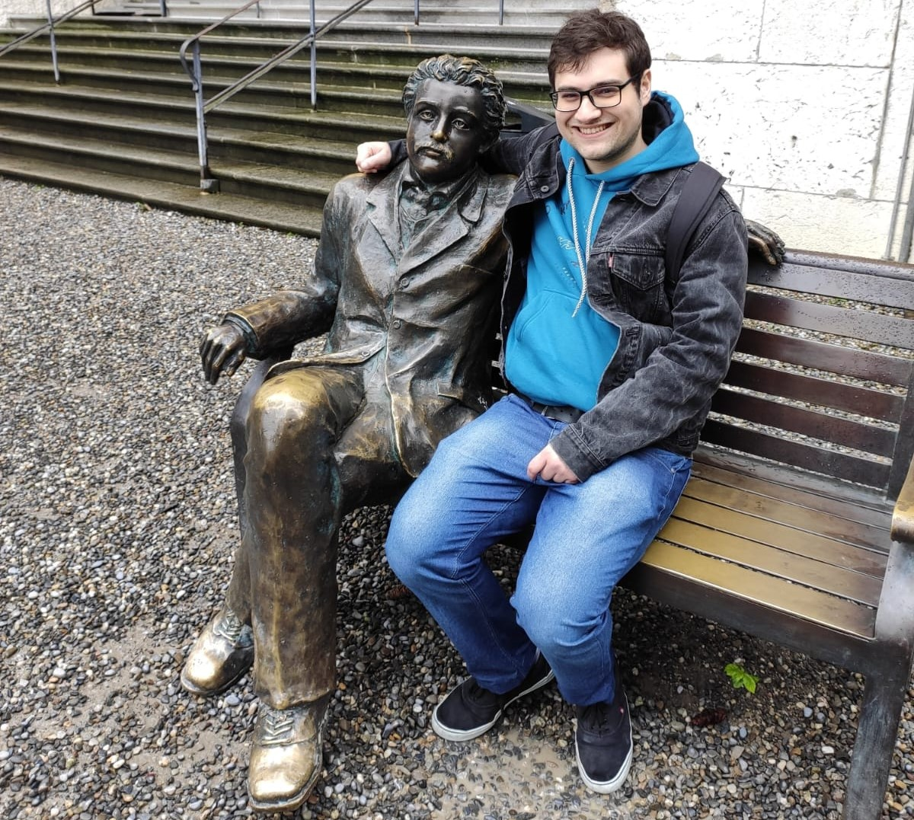

Henrique Enneshenrique.lovisi-ennes[at]inria.fr Inria Centre at Université Côte d'Azur, 2004 Rte des Lucioles
|
 |
Computer Science PhD student in Algorithmic Quantum Topology at INRIA Université Côte d'Azur, advised by Clément Maria and Nicolas Nisse.
Former Mathematical Modeling Master's student at FGV-EMAp advised by Raphaël Tinarrage and César Camacho.
Graduated from Whitman College in Mathematics and Physics.
My latest CV.
My codes can be all found in Github.
Research
Most of my interest lies within topology, algebra and geometry, and their applications to classical and quantum complexity theory. I also love statistics and machine learning, both theoretical and applied, so you can find me tackling some problems in these fields now and then!Algorithmic quantum topology: knots and 3-manifolds, quantum invariants, topological quantum computing, combinatorial group theory
Foundations of data science: topological data analysis (TDA), group invariant tasks in machine learning, manifold learning
Journal publications and preprints
|
Hardness of computation of quantum invariants on 3-manifolds with restricted topology, with Clément Maria. Preprint. An algorithm that, from an input Heegaard diagram, outputs a new manifold with the same Reshetikhin-Turaev invariant but higher Hempel distance. This implies that computational complexity of the invariants is preserved when restricted to hyperbolic manifolds with no low-genus embedded incompressible surface and presented by a strongly irreducible Heegaard diagram. |
|
|
Empirical analysis of Biding Precedent efficiency in the Brazilian Supreme Court via Similar Case Retrieval, with Raphaël Tinarrage , Lucas E. Resck, Lucas T. Gomes, Jean R. Ponciano, Jorge Poco. 2024. To appear in Artificial Intelligence and Law. We assess the impact of binding precedents on the workload of the Brazilian Supreme Court, through time series of similar cases, and discuss the underlying legal mechanisms. |
|
|
LieDetect: Detection of representation orbits of compact Lie groups from point clouds, with Raphaël Tinarrage. 2023. Preprint. An algorithm for the estimation of orbits of linear representations of Lie groups from finite samples, allowing to retrieve the precise representation as a sum of irreps. |
|
|
Two-body bound states through yukawa forces and perspectives on hydrogen and deuterium, with Moira Gresham and Alexander Shaw. 2021. American Journal of Physics, 89(5):511–520, 2021. Numerical solutions to the two-body quantum bound state problem with Yukawa potential. |
|
Papers in conferences
|
Cost Benefit Analysis for Investments in Power Grid Resilience - A Guide, with Edson Daniel Lopes Gonçalves, Joisa Dutra, Rafael Souza. 9th Latin American Energy Economics Meeting (ELAEE). Rio de Janeiro, Brazil. |
|
Measuring the Power Grid Resilience: A Case Study Applied to Brazilian Distribution Companies, with Joisa Dutra, Rafael Souza, Rafael Gomes, Lucas Amaro, Camila Albertin. 27th International Conference on Electricity Distribution. Rome, Italy. |
Talks and posters
| 26 Mar 2025 | Bordeaux, France. JNIM 2024 : Journées Nationales du GDR IFM. Poster: Hardness of computation of quantum invariants on 3-manifolds with restricted topology. | |
| 2 May 2024 | Porquerolles, France. DataShape Yearly Seminar. From Fields to Topology: Constructing TQFT invariants through Physics. | |
| 31 Jan 2024 | Sophia Antipolis, France. DataShape Seminar. Detection of Representation Orbits of Compact Lie Groups from Point Clouds. | |
| 31 Jul 2023 |
|
Kyoto, Japan. TDA Week. Poster: Detection of compact Lie group representations in point clouds and image data. |
| 16 Mar 2023 | Rio de Janeiro, Brazil. Transforming the Role of International Courts and Tribunals in a New Era of Adjudication. Debator. |
Teaching
|
Feb - Apr 2025 |
Introduction to Data Science and Machine Learning. Graduate studies in Energy Transition. FGV, Brazilian Ministry of Mines and Energy, World Bank (project META). |
|
|
Sep - Dec 2023 |
|
Introduction to Mathematical Modelling Applied to Law. Direito FGV (in Portuguese). |
Misc
- I have recently implemented a pre-calculus quiz that I used to give my Calculus student when I was a tutor at Whitman College.
- I am huge fan of old video games. You can check my list of games to play (and you can use it to store yours as well).